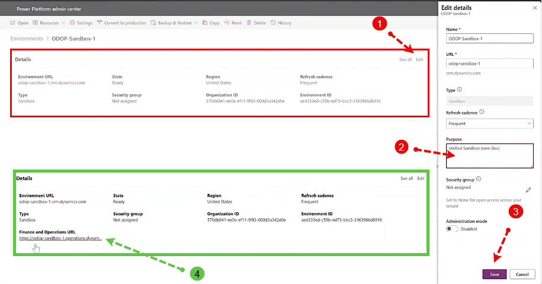

Bug: URL not showed!
If you don't see your Finance and operations URL in the Details after you have deployed the D365 finance and Operations provisioning App,
1- Click on edit
2- Enter a Purpose in the Dialog window
3- Save
4- you should now be able to see the URL
